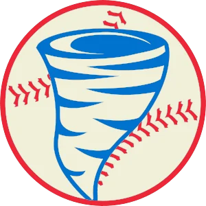

FBL · C
Paul Lo Duca
- Team
 Oklahoma City Twisters
Oklahoma City Twisters- Position
- C
- Bats/Throws
- R/R
- Height/Weight
- 5'10", 185 lb
- Born
- Apr 12, 1972 in Brooklyn, NY
- Age
- 30
- Uniform
- #16
- Salary
- $500,000
2002 Batting
| Team | Lg | G | PA | AB | R | H | 2B | 3B | HR | RBI | BB | K | SB | AVG | OBP | SLG | OPS |
|---|---|---|---|---|---|---|---|---|---|---|---|---|---|---|---|---|---|
| OKC | FBL | 34 | 159 | 143 | 16 | 37 | 6 | 0 | 4 | 17 | 14 | 10 | 0 | .259 | .323 | .385 | .707 |
2002 Batting, Advanced
| Team | Lg | PA | Pit/PA | SH | SF | HBP | IBB | GIDP | CS | OPS+ | ISO | BABIP | BB% | K% | WPA | UBR | WAR |
|---|---|---|---|---|---|---|---|---|---|---|---|---|---|---|---|---|---|
| OKC | FBL | 159 | 3.24 | 0 | 1 | 0 | 0 | 4 | 2 | 83 | .126 | .254 | 8.8% | 6.3% | 0.42 | -1.2 | 0.2 |
Player Profile 2002 FBL, percentiles vs 164 qualified hitters
| Value | Pctl | FBL avg | |
|---|---|---|---|
| BB% | 8.8% | 56th | 8.5% |
| K% | 6.3% | 99th | 15.9% |
| ISO | .126 | 29th | .158 |
| AVG | .259 | 30th | .276 |
| BsR/600 | -8.3 | 25th | -4.2 |
| ZR/150 | +10.8 | 80th | +0.2 |
Each spoke is his percentile among qualified FBL hitters (3.1 PA per team game); the dashed ring is the 50th percentile. K% is reversed, so fewer strikeouts reach further out. ISO = extra bases per at-bat. AVG = hits per at-bat. BsR/600 = baserunning runs per 600 PA: stolen-base runs (wSB) plus OOTP’s UBR, the same total as the Baserunning section. ZR/150 = OOTP zone rating summed over every position he played, divided by his innings in the field and scaled to 150 nine-inning games (innings/9). Averages are league-wide rates.
Batted Ball 2002 FBL, 134 batted balls
Percentile vs the 164 qualified FBL hitters, by height, not quality. Launch angle is a fly-ball versus ground-ball tendency (higher means more fly balls, lower means more ground balls). Balls in play only, from OOTP’s launch-angle reading.
Baserunning 2002 FBL, 159 PA
-2.2 runs baserunning · -8.3 per 600 PA 25th pctl
Attempt rate = steal attempts per time on first by single, walk or HBP (FanGraphs’ approximation; the export doesn’t log every time he stood on first). Percentiles against the 164 qualified FBL hitters; lower GIDP rate ranks higher. Ratings: OOTP scouting, 20–80. Hover the underlined terms for definitions.
Streaks
Longest hitting streak: 5 games (Apr 22 to Apr 27); current: 1
Longest on-base streak: 21 games (Apr 17 to May 13); current: 21
Batting Splits
| Split | G | PA | AB | R | H | 2B | 3B | HR | RBI | BB | K | SB | AVG | OBP | SLG | OPS | ISO | BABIP | BB% | K% |
|---|---|---|---|---|---|---|---|---|---|---|---|---|---|---|---|---|---|---|---|---|
| vs LHP | 18 | 46 | 41 | 7 | 15 | 1 | 0 | 2 | 6 | 4 | 4 | - | .366 | .422 | .537 | .959 | .171 | .371 | 8.7% | 8.7% |
| vs RHP | 33 | 113 | 102 | 9 | 22 | 5 | 0 | 2 | 11 | 10 | 6 | - | .216 | .283 | .324 | .607 | .108 | .211 | 8.8% | 5.3% |
| Home | 22 | 103 | 91 | 10 | 23 | 4 | 0 | 3 | 12 | 10 | 6 | 0 | .253 | .324 | .396 | .719 | .143 | .241 | 9.7% | 5.8% |
| Road | 12 | 56 | 52 | 6 | 14 | 2 | 0 | 1 | 5 | 4 | 4 | 0 | .269 | .321 | .365 | .687 | .096 | .277 | 7.1% | 7.1% |
By Month
| Month | G | PA | AB | R | H | 2B | 3B | HR | RBI | BB | K | SB | AVG | OBP | SLG | OPS | ISO | BABIP | BB% | K% |
|---|---|---|---|---|---|---|---|---|---|---|---|---|---|---|---|---|---|---|---|---|
| April | 24 | 112 | 103 | 11 | 26 | 4 | 0 | 2 | 12 | 8 | 7 | 0 | .252 | .304 | .350 | .653 | .097 | .253 | 7.1% | 6.2% |
| May | 10 | 47 | 40 | 5 | 11 | 2 | 0 | 2 | 5 | 6 | 3 | 0 | .275 | .370 | .475 | .845 | .200 | .257 | 12.8% | 6.4% |
Situational
| Situation | PA | AB | H | 2B | 3B | HR | RBI | BB | K | AVG | OBP | SLG | OPS |
|---|---|---|---|---|---|---|---|---|---|---|---|---|---|
| Bases empty | 83 | 72 | 19 | 5 | 0 | 1 | 1 | 10 | 4 | .264 | .354 | .375 | .729 |
| Runners on | 76 | 71 | 18 | 1 | 0 | 3 | 16 | 4 | 6 | .254 | .289 | .394 | .684 |
| Runners in scoring position | 45 | 40 | 12 | 1 | 0 | 3 | 16 | 4 | 4 | .300 | .356 | .550 | .906 |
| RISP, two outs | 25 | 23 | 8 | 0 | 0 | 2 | 11 | 2 | 3 | .348 | .400 | .609 | 1.009 |
| Innings 1-3 | 59 | 55 | 12 | 3 | 0 | 1 | 5 | 3 | 4 | .218 | .259 | .327 | .586 |
| Innings 4-6 | 45 | 38 | 13 | 1 | 0 | 2 | 7 | 6 | 1 | .342 | .422 | .526 | .949 |
| Innings 7-9 | 53 | 49 | 11 | 2 | 0 | 1 | 5 | 4 | 5 | .224 | .283 | .327 | .610 |
| Extra innings | 2 | 1 | 1 | 0 | 0 | 0 | 0 | 1 | 0 | 1.000 | 1.000 | 1.000 | 2.000 |
| Close & late | 35 | 31 | 8 | 2 | 0 | 1 | 4 | 4 | 4 | .258 | .343 | .419 | .762 |
By Count count on the final pitch
| Count | PA | AB | H | 2B | 3B | HR | RBI | BB | K | AVG | OBP | SLG | OPS |
|---|---|---|---|---|---|---|---|---|---|---|---|---|---|
| First pitch (0-0) | 39 | 38 | 9 | 3 | 0 | 0 | 0 | 0 | 0 | .237 | .237 | .316 | .553 |
| Batter ahead | 50 | 36 | 13 | 1 | 0 | 1 | 5 | 14 | 0 | .361 | .540 | .472 | 1.012 |
| Even count | 26 | 26 | 5 | 0 | 0 | 1 | 2 | 0 | 4 | .192 | .192 | .308 | .500 |
| Batter behind | 44 | 43 | 10 | 2 | 0 | 2 | 10 | 0 | 6 | .233 | .227 | .419 | .646 |
| Two strikes | 53 | 47 | 9 | 2 | 0 | 2 | 8 | 5 | 10 | .191 | .264 | .362 | .626 |
| Full count (3-2) | 12 | 7 | 2 | 0 | 0 | 0 | 1 | 5 | 0 | .286 | .583 | .286 | .869 |
Every count
| Count | PA | AB | H | 2B | 3B | HR | RBI | BB | K | AVG | OBP | SLG | OPS |
|---|---|---|---|---|---|---|---|---|---|---|---|---|---|
| 0-0 | 39 | 38 | 9 | 3 | 0 | 0 | 0 | 0 | 0 | .237 | .237 | .316 | .553 |
| 0-1 | 14 | 14 | 4 | 0 | 0 | 0 | 3 | 0 | 0 | .286 | .286 | .286 | .571 |
| 0-2 | 12 | 12 | 1 | 0 | 0 | 0 | 1 | 0 | 3 | .083 | .083 | .083 | .167 |
| 1-0 | 11 | 11 | 6 | 1 | 0 | 0 | 3 | 0 | 0 | .545 | .545 | .636 | 1.182 |
| 1-1 | 15 | 15 | 4 | 0 | 0 | 1 | 2 | 0 | 0 | .267 | .267 | .467 | .733 |
| 1-2 | 18 | 17 | 5 | 2 | 0 | 2 | 6 | 0 | 3 | .294 | .278 | .765 | 1.042 |
| 2-0 | 5 | 5 | 3 | 0 | 0 | 1 | 1 | 0 | 0 | .600 | .600 | 1.200 | 1.800 |
| 2-1 | 11 | 11 | 1 | 0 | 0 | 0 | 0 | 0 | 0 | .091 | .091 | .091 | .182 |
| 2-2 | 11 | 11 | 1 | 0 | 0 | 0 | 0 | 0 | 4 | .091 | .091 | .091 | .182 |
| 3-0 | 3 | 0 | 0 | 0 | 0 | 0 | 0 | 3 | 0 | - | 1.000 | - | - |
| 3-1 | 8 | 2 | 1 | 0 | 0 | 0 | 0 | 6 | 0 | .500 | .875 | .500 | 1.375 |
| 3-2 | 12 | 7 | 2 | 0 | 0 | 0 | 1 | 5 | 0 | .286 | .583 | .286 | .869 |
Situational splits are rebuilt from every plate appearance in the export (base/out state when the PA began). "RBI" counts runs batted in on that PA. Close & late = 7th inning or later with the score within 3 runs (OOTP’s Close flag marks every PA with the margin at 3 or fewer). Pinch-hitting PA = plate appearances as a pinch hitter (for pitchers: against pinch hitters). Counts are the count when the PA’s final pitch was thrown, as OOTP records it: "Two strikes" means the PA ended on a two-strike pitch, "0-0" is the first-pitch result; batter ahead = more balls than strikes.
2002 Hot and Cold game OPS, game by game
2002 OPS by Game
2002 Spray Chart
2002 Batting Game Log
| Date | Opp | Score | Pos | Bat | PA | AB | R | H | 2B | 3B | HR | RBI | BB | K | SB | CS | HBP | GIDP | WPA |
|---|---|---|---|---|---|---|---|---|---|---|---|---|---|---|---|---|---|---|---|
| May 13 | vsHYG | L 3-8 | C | 3 | 5 | 5 | 1 | 1 | 0 | 0 | 0 | 0 | 0 | 0 | 0 | 0 | 0 | 0 | -0.040 |
| May 12 | vsHYG | W 5-2 | C | 5 | 4 | 3 | 0 | 0 | 0 | 0 | 0 | 0 | 1 | 0 | 0 | 1 | 0 | 0 | -0.087 |
| May 10 | vsORLJ | W 10-5 | C | 3 | 5 | 5 | 2 | 1 | 0 | 0 | 1 | 2 | 0 | 0 | 0 | 0 | 0 | 0 | 0.123 |
| May 9 | vsORLJ | L 1-10 | C | 3 | 4 | 3 | 1 | 1 | 0 | 0 | 1 | 1 | 0 | 0 | 0 | 0 | 0 | 0 | 0.015 |
| May 8 | vsORLJ | W 3-1 | C | 3 | 4 | 3 | 0 | 0 | 0 | 0 | 0 | 0 | 1 | 0 | 0 | 0 | 0 | 1 | -0.045 |
| May 6 | @RiFS | W 4-3 | C | 3 | 5 | 5 | 0 | 2 | 1 | 0 | 0 | 1 | 0 | 1 | 0 | 0 | 0 | 1 | -0.069 |
| May 5 | @RiFS | L 0-5 | C | 5 | 4 | 4 | 0 | 2 | 0 | 0 | 0 | 0 | 0 | 0 | 0 | 0 | 0 | 0 | 0.046 |
| May 3 | vsSaSa | W 14-3 | C | 3 | 5 | 4 | 1 | 2 | 1 | 0 | 0 | 0 | 1 | 0 | 0 | 0 | 0 | 0 | -0.067 |
| May 2 | vsSaSa | L 2-6 | C | 4 | 4 | 3 | 0 | 0 | 0 | 0 | 0 | 1 | 1 | 1 | 0 | 0 | 0 | 0 | -0.037 |
| May 1 | vsSaSa | L 6-8 | 1B | 2 | 7 | 5 | 0 | 2 | 0 | 0 | 0 | 0 | 2 | 1 | 0 | 0 | 0 | 0 | -0.018 |
| Apr 29 | @HONO | W 7-3 | C | 3 | 5 | 5 | 0 | 2 | 0 | 0 | 0 | 0 | 0 | 1 | 0 | 0 | 0 | 0 | -0.021 |
| Apr 28 | @HONO | W 4-3 | 1B | 2 | 5 | 4 | 1 | 0 | 0 | 0 | 0 | 0 | 1 | 0 | 0 | 0 | 0 | 0 | -0.099 |
| Apr 27 | vsMONT | L 1-6 | 1B | 2 | 4 | 4 | 0 | 1 | 0 | 0 | 0 | 0 | 0 | 0 | 0 | 0 | 0 | 1 | -0.019 |
| Apr 26 | vsMONT | L 1-9 | 1B | 2 | 5 | 5 | 0 | 2 | 0 | 0 | 0 | 0 | 0 | 0 | 0 | 0 | 0 | 1 | -0.066 |
| Apr 25 | vsMONT | L 6-8 | 1B | 2 | 5 | 5 | 0 | 1 | 0 | 0 | 0 | 0 | 0 | 2 | 0 | 0 | 0 | 0 | -0.112 |
| Apr 23 | @EUGL | L 1-5 | C | 2 | 4 | 4 | 0 | 1 | 0 | 0 | 0 | 1 | 0 | 0 | 0 | 0 | 0 | 0 | 0.036 |
| Apr 22 | @EUGL | W 7-6 | 1B | 2 | 5 | 5 | 2 | 3 | 0 | 0 | 0 | 0 | 0 | 1 | 0 | 0 | 0 | 0 | -0.006 |
| Apr 20 | vsALBQ | L 2-6 | C | 3 | 5 | 4 | 0 | 0 | 0 | 0 | 0 | 0 | 1 | 1 | 0 | 0 | 0 | 0 | -0.077 |
| Apr 19 | vsALBQ | W 3-2 | C | 2 | 4 | 3 | 0 | 1 | 0 | 0 | 0 | 0 | 1 | 0 | 0 | 0 | 0 | 0 | 0.005 |
| Apr 18 | vsALBQ | L 6-8 | 1B | 3 | 5 | 5 | 0 | 1 | 0 | 0 | 0 | 0 | 0 | 0 | 0 | 0 | 0 | 0 | -0.086 |
| Apr 17 | @MePh | L 0-2 | 1B | 2 | 4 | 3 | 0 | 0 | 0 | 0 | 0 | 0 | 1 | 1 | 0 | 0 | 0 | 0 | -0.037 |
| Apr 16 | @MePh | L 3-7 | 1B | 3 | 5 | 5 | 0 | 0 | 0 | 0 | 0 | 0 | 0 | 0 | 0 | 0 | 0 | 0 | -0.100 |
| Apr 15 | @MePh | W 4-3 | C | 3 | 5 | 4 | 0 | 0 | 0 | 0 | 0 | 0 | 1 | 0 | 0 | 0 | 0 | 0 | -0.006 |
| Apr 14 | vsLoBa | L 6-8 | 1B | 2 | 5 | 4 | 0 | 0 | 0 | 0 | 0 | 1 | 0 | 0 | 0 | 0 | 0 | 0 | -0.089 |
| Apr 13 | vsLoBa | L 7-9 | 1B | 3 | 5 | 5 | 1 | 1 | 0 | 0 | 0 | 1 | 0 | 0 | 0 | 0 | 0 | 0 | -0.027 |
| Apr 12 | vsLoBa | L 7-8 | 1B | 3 | 5 | 5 | 3 | 3 | 2 | 0 | 1 | 3 | 0 | 0 | 0 | 0 | 0 | 0 | 0.338 |
| Apr 9 | vsSDG | W 4-2 | C | 3 | 4 | 3 | 0 | 0 | 0 | 0 | 0 | 0 | 1 | 0 | 0 | 0 | 0 | 0 | -0.036 |
| Apr 8 | vsSDG | L 7-9 | 1B | 3 | 5 | 4 | 0 | 2 | 1 | 0 | 0 | 2 | 1 | 1 | 0 | 0 | 0 | 0 | 0.625 |
| Apr 7 | @VANC | W 8-7 | 1B | 3 | 5 | 5 | 2 | 2 | 0 | 0 | 0 | 0 | 0 | 0 | 0 | 0 | 0 | 0 | 0.042 |
| Apr 5 | vsSB66 | L 3-10 | C | 3 | 4 | 4 | 0 | 0 | 0 | 0 | 0 | 0 | 0 | 0 | 0 | 0 | 0 | 0 | -0.137 |
| Apr 4 | vsSB66 | W 8-7 | C | 3 | 5 | 5 | 1 | 3 | 0 | 0 | 0 | 1 | 0 | 0 | 0 | 1 | 0 | 0 | 0.085 |
| Apr 3 | vsSB66 | L 0-2 | C | 3 | 4 | 4 | 0 | 1 | 0 | 0 | 0 | 0 | 0 | 0 | 0 | 0 | 0 | 0 | -0.048 |
| Apr 2 | @ChKn | L 3-12 | C | 3 | 5 | 4 | 0 | 1 | 1 | 0 | 0 | 0 | 1 | 0 | 0 | 0 | 0 | 0 | -0.024 |
| Apr 1 | @ChKn | W 6-5 | C | 3 | 4 | 4 | 1 | 1 | 0 | 0 | 1 | 3 | 0 | 0 | 0 | 0 | 0 | 0 | 0.458 |
2002 Defense
C / 1B · 306 innings · +3.0 runs defensive runs, 2002
ZR/150 at C: +11.0 · 96th percentile among the 25 FBL Cs with 100+ innings there
Scouting Ratings 20–80 scale, OOTP
OOTP scouting; tick = potential; 50 is average.
Full fielding stats
2002 Fielding by Position
| Team | Lg | Pos | G | GS | Inn | TC | PO | A | E | DP | FPct | ZR | Arm | Framing | SB | CS | CS% | PB |
|---|---|---|---|---|---|---|---|---|---|---|---|---|---|---|---|---|---|---|
| OKC | FBL | C | 24 | 20 | 189.0 | 168 | 146 | 20 | 2 | 1 | .988 | 1.5 | 0.0 | 0.5 | 19 | 15 | 44.1% | 0 |
| OKC | FBL | 1B | 14 | 14 | 117.0 | 109 | 101 | 8 | 0 | 7 | 1.000 | 0.9 | - | - | - | - | - | - |
ZR (zone rating), Arm and Framing are OOTP's runs-above-average figures. SB/CS/CS% are base stealers against him as a catcher.
Career Batting
| Year | Team | Lvl | G | PA | AB | R | H | 2B | 3B | HR | RBI | BB | K | SB | AVG | OBP | SLG | OPS | WAR |
|---|---|---|---|---|---|---|---|---|---|---|---|---|---|---|---|---|---|---|---|
| 1993 | T | A | 39 | 150 | 134 | 17 | 42 | 6 | 0 | 0 | 13 | 13 | 22 | 0 | .313 | .380 | .358 | .738 | 0.9 |
| 1994 | - | A | 123 | 514 | 455 | 65 | 141 | 32 | 1 | 6 | 68 | 52 | 49 | 16 | .310 | .381 | .424 | .805 | 3.1 |
| 1995 | SARe | AA | 61 | 227 | 199 | 27 | 49 | 8 | 0 | 1 | 8 | 26 | 25 | 5 | .246 | .339 | .302 | .641 | 0.5 |
| 1996 | T | A | 124 | 515 | 439 | 54 | 134 | 22 | 0 | 3 | 66 | 70 | 38 | 8 | .305 | .400 | .376 | .776 | 3.9 |
| 1997 | SARe | AA | 105 | 443 | 385 | 63 | 126 | 28 | 2 | 7 | 69 | 46 | 27 | 16 | .327 | .399 | .465 | .864 | 3.8 |
| 1998 | LAD | Majors | 6 | 14 | 14 | 2 | 4 | 1 | 0 | 0 | 1 | 0 | 1 | 0 | .286 | .286 | .357 | .643 | -0.0 |
| 1998 | - | AAA | 126 | 528 | 451 | 69 | 144 | 30 | 3 | 8 | 58 | 59 | 40 | 19 | .319 | .399 | .452 | .852 | 3.3 |
| 1999 | LAD | Majors | 36 | 110 | 95 | 11 | 22 | 1 | 0 | 3 | 11 | 10 | 9 | 1 | .232 | .312 | .337 | .649 | -0.2 |
| 1999 | - | AAA | 26 | 92 | 76 | 17 | 28 | 9 | 0 | 1 | 8 | 10 | 1 | 1 | .368 | .478 | .526 | 1.005 | 1.1 |
| 2000 | LAD | Majors | 34 | 75 | 65 | 6 | 16 | 2 | 0 | 2 | 8 | 6 | 8 | 0 | .246 | .301 | .369 | .671 | -0.1 |
| 2000 | - | AAA | 78 | 318 | 279 | 47 | 98 | 27 | 3 | 4 | 54 | 33 | 14 | 8 | .351 | .421 | .513 | .933 | 2.8 |
| 2001 | LAD | Majors | 125 | 519 | 460 | 71 | 147 | 28 | 0 | 25 | 90 | 39 | 30 | 2 | .320 | .374 | .543 | .917 | 4.1 |
| 2001 | LVG | AAA | 3 | 10 | 9 | 3 | 3 | 2 | 0 | 0 | 3 | 1 | 0 | 0 | .333 | .400 | .556 | .956 | 0.1 |
| 2002 | OKC | FBL | 34 | 159 | 143 | 16 | 37 | 6 | 0 | 4 | 17 | 14 | 10 | 0 | .259 | .323 | .385 | .707 | 0.2 |
| Top level | 235 | 877 | 777 | 106 | 226 | 38 | 0 | 34 | 127 | 69 | 58 | 3 | .291 | .349 | .471 | .820 | 4.1 |
Seasons before 2002 are the player's real-life record, listed under the franchise that holds that history in this universe. "Top level" totals count major-league-level seasons only.
Service Time & Contract Status
- Service time
- 1.077 (249 days; 43 this season)
- Status
- Pre-Arb
- Arbitration
- 2004 season (projected)
- Free agency
- After the 2006 season (projected)
- Options
- 3 used, 0 remaining (of 3)
Service time is Y.DDD: major-league service years plus days toward the next year (172 days = 1 year, from the league rules). Status follows the league rules: under 3 years Pre-Arb, 3 to 5 years Arb 1/2/3, 6+ years FA-eligible. The export's arbitration_offering is 0 and no player has gone through arbitration yet (has_received_arbitration is 0 for everyone), so these statuses come from the rules, not from hearings. Projected years assume a full major-league season of service every year from 2002 on.
Contract
| Year | Salary |
|---|---|
| 2002 | $500,000 |
1-year contract with Oklahoma City Twisters.
Most Frequent Matchups pitchers he has faced
| Pitcher | AB | H | HR | AVG |
|---|---|---|---|---|
| Andy Pettitte | 4 | 3 | 0 | .750 |
| Jarrod Washburn | 4 | 1 | 0 | .250 |
| Jae-weong Seo | 4 | 1 | 0 | .250 |
| Bronson Arroyo | 4 | 1 | 0 | .250 |
| Dan Haren | 3 | 2 | 0 | .667 |
| Rolando Arrojo | 3 | 2 | 1 | .667 |
| Brian Anderson | 3 | 2 | 0 | .667 |
| Willie Banks | 3 | 2 | 0 | .667 |
| Todd Ritchie | 3 | 1 | 0 | .333 |
| Omar Daal | 3 | 1 | 0 | .333 |
| Damian Moss | 3 | 1 | 0 | .333 |
| Darren Dreifort | 3 | 1 | 0 | .333 |
| Zach Day | 3 | 1 | 0 | .333 |
| Sam McConnell | 3 | 1 | 0 | .333 |
| Carlton Loewer | 3 | 1 | 0 | .333 |
In Our Stories 1
- Roundups Roundup, April 12: Marlins 9, Cardinals 4 Alex Miller